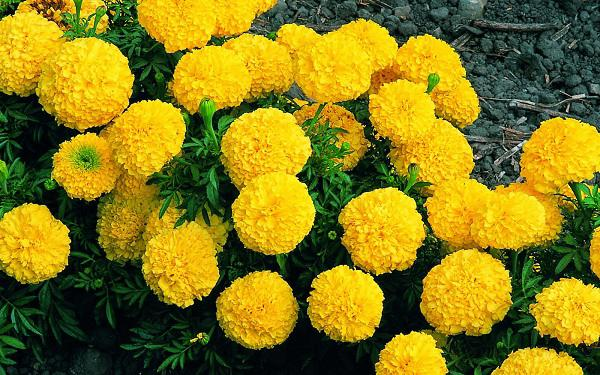

HOA CÚC VẠN THỌ
|  |
Chi Cúc vạn thọ (danh pháp khoa học: Tagetes) là một chi của khoảng 60 loài cây thân thảo một năm và lâu năm trong họ Cúc (Asteraceae). Chúng có nguồn gốc tại khu vực kéo dài từ tây nam Hoa Kỳ qua México và về phía nam tới khắp Nam Mỹ. Chúng được biết đến với tên gọi chung là cúc vạn thọ (không nhầm với chi Cosmos), hay cúc vạn thọ Mexico (cempasúchil), cúc vạn thọ châu Phi (thường được dùng để chỉ các giống và cây lai ghép của T. erecta, mặc dù loài này không phải là cây bản địa của châu Phi), hay cúc vạn thọ Pháp (thường được dùng để chỉ các giống và cây lai ghép của T. patula, phần nhiều trong số đó được phát triển tại Pháp mặc dù loài này không phải là cây bản địa của quốc gia này). Có ít nhất một loài là cỏ dại đã hợp thủy thổ của châu Phi, Hawaii và Australia. Tại Việt Nam, cúc vạn thọ được trồng chủ yếu là các giống của T.patula. Các loài khác nhau có kích thước cao từ 0,05-2,2 m. Chúng có các lá lông chim màu xanh lục với hoa từ trắng, vàng kim, da cam, vàng tới gần như đỏ, đường kính khoảng 0,1 tới 4–6 cm, nói chung với cả các chiếc hoa tia và đĩa chiếc hoa. Tán lá của cúc vạn thọ có mùi thơm như xạ và hăng, mặc dù các giống, thứ sau này đã được tạo ra là không có mùi. Người ta cho rằng làm như thế để ngăn cản một số côn trùng (mặc dù người ta đã ghi nhận thấy chúng vẫn bị một số ấu trùng của các loài cánh vẩy phá hại, như Melanchra persicariae) cùng các loài giun tròn phá hại. Tagetes vì thế thường được sử dụng trong vai trò của cây đồng hành. T. minuta, có nguồn gốc Nam Mỹ, đã được sử dụng làm một trong những nguồn tinh dầu, gọi là dầu cúc vạn thọ, trong công nghiệp sản xuất nước hoa cũng như làm chất tạo hương vị cho công nghiệp chế biến lương thực-thực phẩm và thuốc lá tại Nam Phi, nơi mà loài này cũng là hữu ích trong việc cải tạo đất bỏ hoang. Một vài loài lâu năm có sức kháng cự chống lại hươu, nai, thỏ, lợn cỏ pêcari và động vật gặm nhấm. Cúc vạn thọ (gọi tắt là vạn thọ) ở miền Nam Việt Nam Vạn thọ có thời gian giữ bông nở kéo dài khá lâu, ngay cả khi thân và lá đã tàn, nên người Việt từ xưa đã chọn loại cây này để dâng cúng.